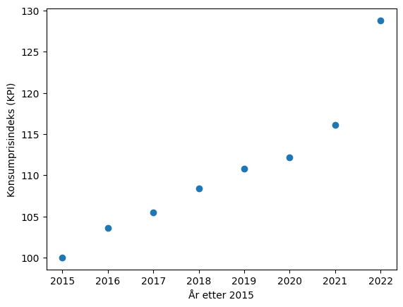
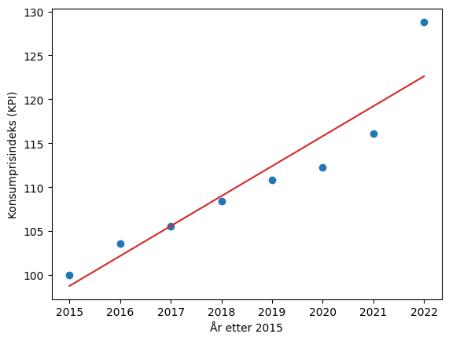
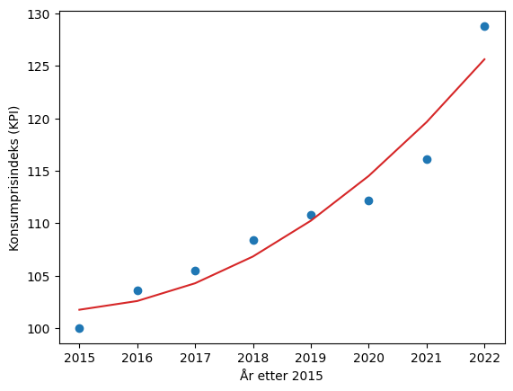

Regresjon#
Når vi jobber med reelle datasett ønsker vi ofte å finne ut hvilken matematisk funksjon som passer best til dataene.
Når vi har funnet en matematisk funksjon er mulighetene mange. Vi kan lage en modell som ser hva som har skjedd mellom, før og etter datapunktene våre. Som en slags data-trollmann kan vi altså både spå fremtiden og se tilbake i tid 🧙♂️🔮
La oss starte med eksempelet om konsumprisindeks fra tidligere.
import matplotlib.pyplot as plt
x = [2015, 2016, 2017, 2018, 2019, 2020, 2021, 2022] # År etter 2015
y = [100, 103.6, 105.5, 108.4, 110.8, 112.2, 116.1, 128.8] # Konsumprisindeks
plt.scatter(x, y)
plt.xlabel("År etter 2015")
plt.ylabel("Konsumprisindeks (KPI)")
plt.show()

Hvilken type matematisk funksjon tror du passer best her? En lineær funksjon? En andregradsfunksjon? Eller kanskje en eksponentiell funksjon?
I denne delen skal vi bruke
curve_fitfunksjonen frascipy-pakken. Det kan hende du må installere denne ved å kjørepip install scipyi terminalvinduet.
Eksempel: Lineære funksjoner#
Lineære funksjoner har funksjonsuttrykk på formen \(f(x) = ax + b\). Ved å bruke curve_fit funksjonen kan vi finne hva koeffisientene \(a\) og \(b\) må være for at funksjonsuttrykket skal passe best mulig til datapunktene.
from scipy.optimize import curve_fit
import numpy as np
import matplotlib.pyplot as plt
# Datapunkter (i arrays)
x = np.array([2015, 2016, 2017, 2018, 2019, 2020, 2021, 2022]) # År etter 2015
y = np.array([100, 103.6, 105.5, 108.4, 110.8, 112.2, 116.1, 128.8]) # Konsumprisindeks
# Definerer den matematiske funksjonen
def f(x, a, b):
return a * x + b
# Finner koeffisienter
a, b = curve_fit(f, x, y)[0]
print("a:", a) # Skriver ut a-verdien
print("b:", b) # Skriver ut b-verdien
plt.scatter(x, y)
plt.plot(x, f(x, a, b), color = "tab:red")
plt.xlabel("År etter 2015")
plt.ylabel("Konsumprisindeks (KPI)")
plt.show()
a: 3.4119048825839484
b: -6776.255005495699

curve_fit funksjonen fant altså koeffisientene til å være \(a\approx 3.41\) og \(b\approx -6776.26\). Det vil si at funksjonsuttrykket for grafen kan skrives som \(f(x)=3.41x - 6776.26\).
Siden koeffisienten \(a\approx 3.41\) kan vi si at konsumprisindeksen i gjennomsnitt stiger med \(3.41\) per år, ifølge modellen vår.
Noen kommentarer til koden
Vi må gjøre listene med data om til arrays med
np.array()for å kunne brukecurve_fit-funksjonen på denne måten.curve_fit-funksjonen gir ut flere verdier i en liste, men vi er bare interessert i den første verdien i denne listen, som er en liste med koeffisientene. Derfor skriver vikoeffisienter = curve_fit(f, x, y)[0]
Sette inn verdier i modellen#
La oss bruke modellen vår til å spå fremtiden eller se tilbake i tid.
Hva sier modellen oss at konsumprisindeksen blir i 2030?
Hva sier modellen vår at konsumprisindeksen var i 2005?
Når vi har brukt curve_fit for å finne koeffisientene a og b er det enkelt å finne konsumprisindeksen i et gitt år ved å skrive f(år, a, b).
from scipy.optimize import curve_fit
import numpy as np
# Datapunkter (i arrays)
x = np.array([2015, 2016, 2017, 2018, 2019, 2020, 2021, 2022]) # År etter 2015
y = np.array([100, 103.6, 105.5, 108.4, 110.8, 112.2, 116.1, 128.8]) # Konsumprisindeks
# Definerer den matematiske funksjonen
def f(x, a, b):
return a * x + b
# Finner koeffisienter
a, b = curve_fit(f, x, y)[0]
print("KPI i 2030 (modell):", f(2030, a, b))
print("KPI i 2005 (modell):", f(2005, a, b))
KPI i 2030 (modell): 149.91190614971583
KPI i 2005 (modell): 64.6142840851171
Hvordan passer modellen?
Modellen sier altså at konsumprisindeksen i \(2030\) kommer til å bli omtrent \(149.91\).
Den sier også at konsumprisindeksen i \(2005\) var omtrent \(64.61\). Den var faktisk \(82.3\).
Det kan være flere grunner for at modellen vår ikke passer godt med virkeligheten.
Vi har for få datapunkter.
Det siste datapunktet gikk opp mye mer enn alle de andre. Hva skjedde i 2022?
Å bruke en lineær funksjon var kanskje ikke riktig valg.
Andre matematiske funksjoner#
La oss prøve å lage en modell med en andregradsfunksjon. Andregradsfunksjoner har funksjonsuttrykk på formen \(f(x)=ax^2 + bx + c\).
Det eneste vi må endre i koden over er hvordan vi definerer den matematiske funksjonen og hvilke koeffisienter vi skal finne med curve_fit.
from scipy.optimize import curve_fit
import numpy as np
import matplotlib.pyplot as plt
# Datapunkter (i arrays)
x = np.array([2015, 2016, 2017, 2018, 2019, 2020, 2021, 2022]) # År etter 2015
y = np.array([100, 103.6, 105.5, 108.4, 110.8, 112.2, 116.1, 128.8]) # Konsumprisindeks
# Definerer den matematiske funksjonen
def f(x, a, b, c):
return a * x**2 + b * x + c
# Finner koeffisienter
a, b, c = curve_fit(f, x, y)[0]
print("a:", a) # Skriver ut a-verdien
print("b:", b) # Skriver ut b-verdien
print("c:", c) # Skriver ut c-verdien
plt.scatter(x, y)
plt.plot(x, f(x, a, b, c), color = "tab:red")
plt.xlabel("År etter 2015")
plt.ylabel("Konsumprisindeks (KPI)")
plt.show()
a: 0.4297619048563457
b: -1731.5369051521418
c: 1744218.5753940183

curve_fit funksjonen fant altså koeffisientene til å være \(a\approx 0.43\), \(b\approx -1731.54\) og \(c\approx 1744218.58\). Det vil si at funksjonsuttrykket for grafen kan skrives som \(f(x)=0.43x^2 - 1731.54x + 1744218.58\).
På samme måte kan vi også finne modeller med andre matematiske funksjonstyper som
Tredjegradsfunksjoner \(f(x)=ax^3+bx^2+cx+d\)
Eksponentialfunksjoner \(f(x)=ab^x\)
Potensfunksjoner \(f(x)=ax^b\)
Sinusfunksjoner \(f(x)=A*sin(kx + \phi) + d\)
Kilde til data om konsumprisindeks: SSB